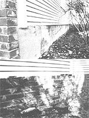
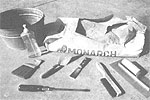

When you start thinking about weatherproofing your house, look down. You may need to.. .
Quite often homeowners are so busy insulating, caulking, and weatherstripping obvious energy leaks that they fail to check their homes' foundations for the kind of seepages that can cause cold floors (and feet), higherthan-need-be utility bills, frozen water pipes, and drafts up walls and around heat ducts.
After years of being exposed to cold, rain, and snow, the mortar that holds together the foundations (usually block, rock, or brick) of older homes tends to develop holes and cracks. It takes only a few minutes to determine whether your underpinning needs attention, and-better still-just a few sparetime hours to make the repairs.
WHAT CAN YOU DO?
There are two ways to stop such leakage without having to resort to building a new foundation, and, surprisingly, the more expensive method is not in most cases the best.
The first process-and the least effective, to my way of thinking-is to put fiberglass batts or roll insulation on the inside of the leaking wall. You see, it's virtually impossible to recover the cost of this repair in energy savings over a reasonable period of time, and though this procedure may stop the leaks, it doesn't stop the deterioration.
The alternative is to point or plaster (or both) the bulwark. These jobs can be accomplished in a few hours-even by a noviceand the raw materials are not costly.
WHAT YOU'LL NEED
The supplies necessary for pointing and plastering include masonry-grade cement, sand, and water. (EDITOR'S NOTE: The author recommends masonry-grade cement because it is finely ground and thus quite adhesive, and also because it contains additives that control the setting time and add waterproofing.] Each project will require a different amount of grout, but a 94-pound sack of cement (about $4.50) and 2 cubic feet of sand (around $16.00 a cubic yard) should carry you through a weekend of plugging the gaps ...and even leave you with filler for the children's sandbox!
If you don't have a mortar box or cement mixer on hand, an old galvanized foot tub or a five-gallon plastic bucket-the kind industrial supplies come in-will work fine. Just be sure to clean all utensils as soon as you're finished for the day. You'll also need a small pointing trowel, a plastering trowel (if you decide to do both jobs), a wire brush, a whisk broom, a big, sturdy screwdriver, a putty knife, and a spray bottle (the kind window cleaner comes in).
Don't, however, rush off to the hardware store and pay a big price for professionalquality trowels. Such flexible tools, which will spring back to their original shape, are certainly the best, but less expensive models will work just as well for a short time, and the difference in price is usually $10 or more. Better yet, if you plan ahead by looking around at garage sales and flea markets, you'll probably be able to find quality tools at secondhand prices.
GETTING READY
Now that you have your implements assembled and have arranged to have the cement and sand delivered, it's time to prepare the foundation.
Carefully clean "rotten" mortar out of all cracks that need repair. Use the heavy-dut% screwdriver and putty knife to pry out the decayed grout, which will be grainy and crumbly, and then go over the cracks with the wire brush. Finally, sweep out any remaining small particles with the whisk broom and wipe out the dust with an old terry towel.
MIXING THE MUD
The rule of thumb for making grout is two parts sand to one part cement. This ratio produces concrete that's rich enough to bond well to the existing foundation material. Before adding water to the cement and sand, though, make sure they are thoroughly mixed. Each grain of sand must be coated with cement if a good cohesion is to be established. Do the dry-mixing by folding the two components together until the whole batch is gray-dark gray if the sand is damp-and make sure there isn't a hint of yellow sand color anywhere, and that there's no caking at the bottom of the container.
Next, stack the mixture to one side of the vessel and pour water, a bit at a time, into the hole you've created. Pull the sand/cement blend into this reservoir, mixing constantly. Continue until the mortar has the consistency of extra-stiff cake batter.
The proper thickness of the cement will depend somewhat upon the skills and preferences of the person applying it. If you'd like a stiffer grout, sprinkle a little cement on the mixture and blend it in. If, on the other hand. the mud is too thick to suit you, mix in a few squirts from the water bottle.
When you're satisfied that the mixture is right, it's time to apply it to the foundation. First, though, spray water on the area to be worked so that the mortar will adhere to it (this process is especially critical in warm weather).
TO POINT...
Pointing involves putting grout in the cracks and-as best you can-making it look like the original mortar. This technique is most effective in cases where there are just a few small cracks, or when the foundation is made of fairly sizable pieces, such as cement blocks or large rocks.
Materials needed to repair cracks and deteriorated joints in a brick foundation: mixing container,
masonry-grade cement, spray bottle, whisk broom, pointing trowel, putty knife, screwdriver, wire
brush, and plastering trowel.
There are several steps in pointing a brick foundation: First, remove the old, deteriorated grout from
between the bricks, using the screwdriver and putty knife. Next, give the joint a good going-over
with a wire brush. Then sweep it out with a whisk broom and wipe it clean with a towel. Spray the
to-be-repaired area with the water bottle, apply the new mortar to the cracks with a pointing trowel,
scrape off the excess, then smooth the grout with the broom of the travel.
First, pick up a small amount of the mud on the edge of the trowel and push it into the fracture. If the crack is long and straight, you can use the trowel to form ridges in the grout (in the container); then cut off beads with the edge of the tool and press them into the joint. Once the mortar is in the crevice, run the point of the trowel down the middle of it to force it between the blocks. Repeat the process until the fissure is filled, then scrape off the excess and smooth it down one last time with the bottom of the trowel. (Dampening the tool with water from the spray bottle before the last step will give the job a slicker-looking finish.)
Pointed joints aren't always neat-especially when the work is done by an amateur-because the new grout is a different color, and it's difficult to make a filled crack look like the original. On the other hand, the method is effective.
OR PLASTER
If you can ice a cake or spread peanut butter on a piece of bread, you can plaster over an old foundation and usually come out with a professional-looking job. Plastering takes longer than pointing, and the materials cost more, but the technique is the best one to use for badly deteriorated foundations constructed of relatively small components, such as bricks.
The preparations required for plastering are the same as those for pointing, except that you need to pay a little more attention to the consistency of the mortar, since you'll be putting a coat of concrete over the outside of the foundation. As noted earlier, the only additional tool you'll need is a plastering trowel, which is a long, narrow-handled device with square ends.
Apply the mortar in globs and then spread it over the surface with sweeping circular strokes of the trowel, all the while carrying the leading edge just a fraction of an inch above the working material so the tool doesn't gouge it. After applying a few square feet of the cement, go back over it carefully to put on the finishing touches. Some folks like a smooth surface-which you can get with a little practice and patience-while others prefer a rough, grainy look. It's really just a matter of taste.
A quarter of an inch of concrete coating on the foundation will usually be sufficient, but up to two inches can be used. (You can also employ a base of chicken wire or wire mesh to give the plaster increased strength and to prevent cracks.)
AND REMEMBER ...
Filling holes is only part of the job of weatherizing a foundation. Insulation should be added to crawl space covers, and if you have a basement with windows, those should be given some attention, too. A good way to keep cold air from getting in around the windows (and the ventilation blocks) is to cut fiberglass insulation to fit the opening, back it up with fiberboard, and then drive a couple of stakes in the ground to hold the "sandwich" in place.
So, grab a trowel, mix some grout, and get down to the basics of making your home more energy-efficient.
|
 LEFT: This section of a brick foundation was plastered over with a quarter inch of mortar. RIGHT: The rotted grout was removed from around the bricks and replaced by pointing (a technique that involves putting new mortar in the cracks and blending it to resemble the old mud). |
 |
|
|
|
|
|